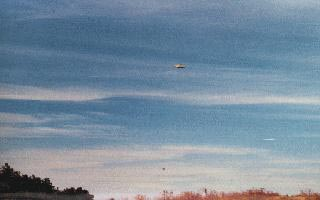

02Entre 18:45 et 19:30 Dans les départements de la Loire (Rhône-Alpes) et de la Haute Loire (Auvergne), plusieurs
personnes observent les déplacements d'un phénomène lumineux composé de plusieurs lueurs de couleurs différentes.
Malgré des divergences dans les témoignages, tous les témoins sont intrigués par l'absence de bruit provenant de cet
objet. Malgré l'enquête de gendarmerie, trop peu d'informations seront recueillies pour consolider toute hypothèse
GEPAN : PAN classé C.
06 A la Ferme Glen Mulkey à Bentonville, Route
2 (comté de Benton, Arkansas), enquête sur la "mutilation" d'un veau
de 200 kg trouvé vidé de son sang à 45 m de la résidence du propriétaire : la langue est découpée comme
"chirurgicalement" et enlevée "avec une grande habileté". L'anus et les testicules sont également enlevés. Egalement
une incision de 10 cm sous l'épaule gauche, ayant permis l'enlèvement du coeur "d'une manière chirurgicale" Sider, J.:.
08au petit matin Plusieurs témoins situés dans des
départements différents observent dans le ciel le passage rapide d'un phénomène lumineux. D'après les descriptions
des témoins, ce phénomène était suivi d'une trainée colorée et se déplaçait selon une trajectoire descendante. Les
lieux présumés de chute de l'objet ont fait l'objet de recherches mais aucune trace au sol n'a été découverte Ces témoins ont probablement assisté à une rentrée atmosphériqueGEPAN : PAN classé B.
10 7 techniciens, dont 1 citoyen américain expatrié, travaillent au Centre de collection
n° 24 de la station de pompage de la Compagnie pétrolière koweïtienne, située à Umm Al-Aish, observent un ovni cylindrique, avec une coupole et des lumières rouges et
clignotanges, se posant silencieusement non loin d'eux. Les pompes à pétrole cessent de fonctionner et ne reprennent
leur activité normale que lorsque l'ovni repart 7 mn plus tard. Les témoins estimeront son volume supérieur à
celui d'un jumbo-jet, mais l'engin ne laissera aucune trace à l'endroit où il a atterri. Tout le temps qu'aura
duré l'apparition, les réseaux de télécommunications internationales du Koweit auront cessé de fonctionner.
Observation du 15 novembre

1516:00 A Ipamari Goyas (Brésil),
photographie (ci-contre).
2216:45 Dans une carrière de silice dans la commune de
Larchan, à 3 km de La-Chapelle-La-Reine (77), par un ciel légèrement nuageux avec un important
trafic aérien et routier, à proximité de la faille Montluçon-Montargis, en forêt de la Commanderie (prolongement de
la forêt de Fontainebleau, par endroit inexplorée car de nombreux marais s'y trouvent dont certains, parait-il, ont
jusqu'à 40 m de profondeur), M. Langlois (46 ans, propriétaire de la carrière, marié, 2
filles), Paul Guyon (42 ans, ouvrier à la carrière, marié, 1 fils), Ouassou Mimoun (33 ans, ouvrier à la carrière) s'activent sur le chantier alors que les
camions sont partis avec leur chargement de sable. Langlois se trouve sur la hauteur de
la sablière, Mrs Guyon et Mimoun se trouvent plus bas,
côte à côte, travaillant à la pelle. Soudain M. Langlois attire l'attention des hommes
regardez là-bas, ça tourne ! Ils observent 2 objets ayant la forme d'une assiette renversée qui tourne autour
du rocher du Diable (au sud-ouest de la carrière), un peu plus bas que les sommets à environ 20 m du sol au ras des
arbres de la forêt, au-dessus des marais. Ils tournent dans le sens inverse des aiguilles d'une montre à une allure
vertigineuse en laissant derrière eux une traînée que les témoins qualifieront de condensation. Cette traînée
sera visible seulement près du sol. Puis les objets s'arrêtent et à ce moment-là 1 objet plus important sort du côté
sud, arrive en
feuille morte et plonge derrière le rocher où il disparaît. Sa forme d'abord imprécise s'affirme en sortant
des nuages qu'il semble faire
bouillonner. C'est un disque, sa grosseur est évaluée à 2 fois celle du soleil. Lui aussi laisse la même traînée à
proximité du sol. M. Guyon verra seulement cet objet. L'atterrissage n'est pas visible,
mais on indique qu'il y a quasi-atterrissage. C'est alors que M. Langlois levant les
yeux vers le zénith aperçoit un 4ème objet de la taille de ceux qui tournaient autour du rocher. Il
amorce une descente à plat (?) stoppe et à une vitesse très rapide rejoint les 2 autres et se met à tourner avec eux
autour du rocher avec aussi la même traînée. M. Langlois remarque qu'il possède un
liseré brillant autour. Puis tous les objets disparaissent derrière le rocher. La couleur des objets qu'ont décrit
les témoins séparément est celle du pantone n° 410-A. Aucun bruit ne sera perçu, ce qui étonnera fortement les
témoins. Le départ des objets ne sera pas observé, Mimoun indiquera avoir observé 15
jours avant, 2 objets de chaque côté du rocher. Les 3 témoins seront formels quant à la matérialité des faits Enquête de Frédérique Sagnès (infirmière) et Daniel Boueyre (étudiant en sociologie). Groupe Phobos..
26vers 06:00 A Pouillon (Landes, Aquitaine),
un agriculteur dans un champs aperçoit à 700 m ou 800 m de lui 1 source lumineuse blanche très vive qui a un
mouvement vertical de faible amplitude à 5 ou 6 mètres du sol apparemment. Une zone sombre de forme sphérique est
aperçue sous cette lumière L'enquête sur place ne révèlera aucune trace au sol. Aucun vol d'exercice militaire n'a été recensé à cette heure le jour de l'observation. Aucun autre témoignage ne sera recueilli. Les photographies prises par les gendarmes n'ont pas été retrouvées dans le dossier de gendarmerieGEPAN: PAN classé C.